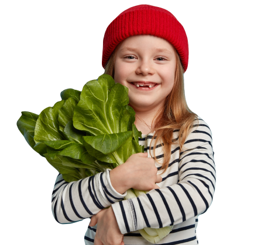

<section class="section steps container">
  <div class="steps-section">
    <div class="steps-wrap">
      <h2 class="steps-title">3 Easy Steps for Buying Fresh Vegetables</h2>
      <ol class="steps-list">
        <li class="steps-item">
          Just choose the vegetable you want to order by clicking on the
          checkboxes next to it.
        </li>
        <li class="steps-item">Click on the basket and fill out the form.</li>
        <li class="steps-item">
          Sit back and relax! Your fresh vegetables basket will be delivered.
        </li>
      </ol>
    </div>
    <picture>
      <source
        srcset="
          ./img/steps/litte-girl-veggy.webp 1x,
          ./img/steps/little-girl2x.webp    2x
        "
        type="image/webp"
      />
      <source
        class="steps-img"
        srcset="
          ./img/steps/litte-girl-veggy.png 1x,
          ./img/steps/little-girl2x.png    2x
        "
        type="image/png"
      />
      
    </picture>
  </div>
</section>
